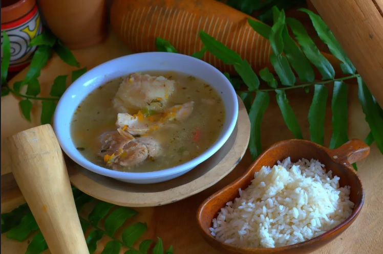
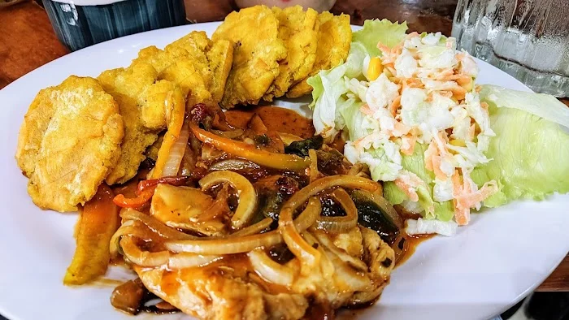
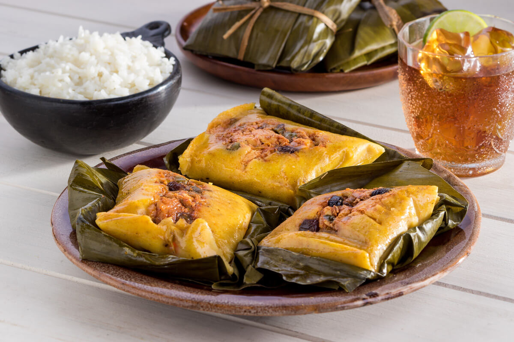
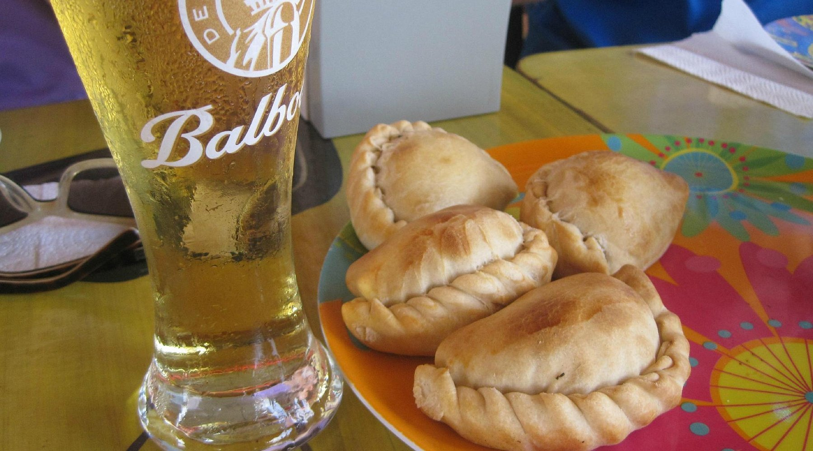
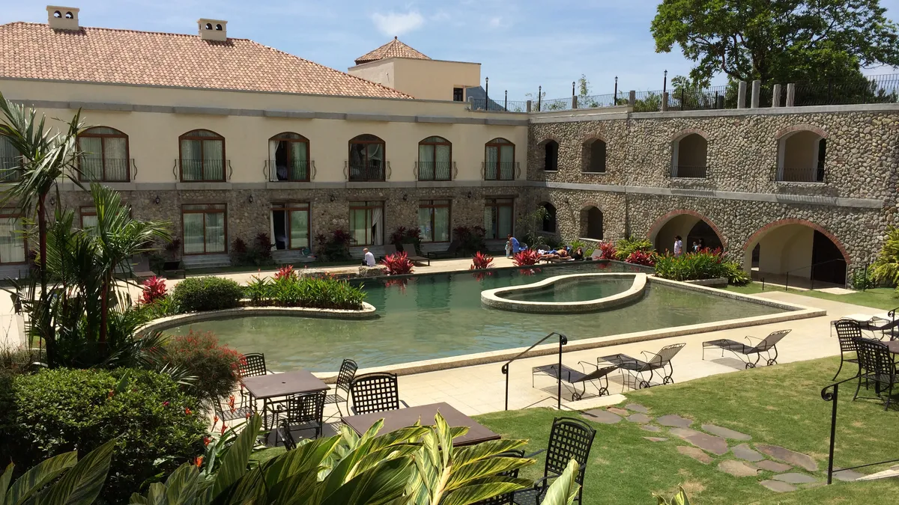
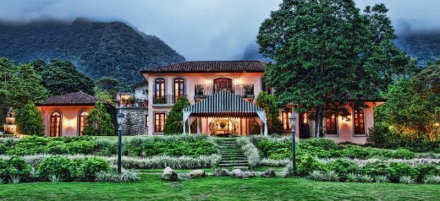
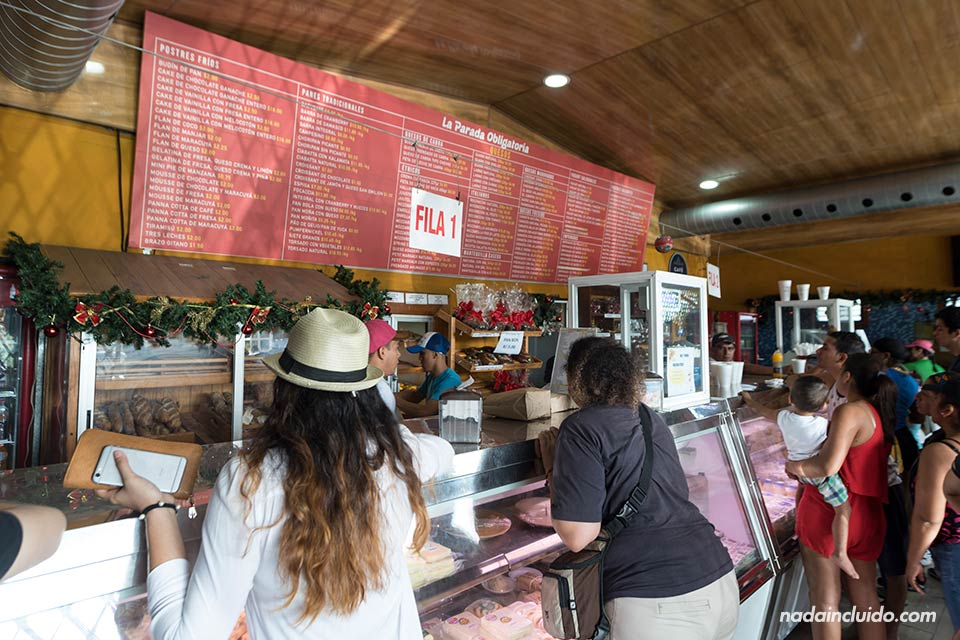

Gastronomía Típica del Valle de Antón
Platos Tradicionales

Sancocho
Caldo tradicional de pollo con vegetales locales, considerado uno de los platos más emblemáticos del país.

Patacones con Guarnición
Plátanos verdes fritos acompañados de carnes, quesos, salsas o ceviches típicos.

Tamales
Preparados con maíz, pollo o cerdo y especias, envueltos en hojas de bijao.

Empanadas Caseras
De maíz o harina, rellenas de carne, pollo o queso, muy comunes en desayunos y ferias.
Restaurantes Recomendados

Los Mandarinos
Restaurante reconocido por combinar gastronomía local con cocina internacional.

Casa de Lourdes
Una de las experiencias gastronómicas más destacadas del Valle, en un entorno colonial único.

Restaurante Quesos Chela
Famoso por productos artesanales, desayunos típicos y ambiente campestre.